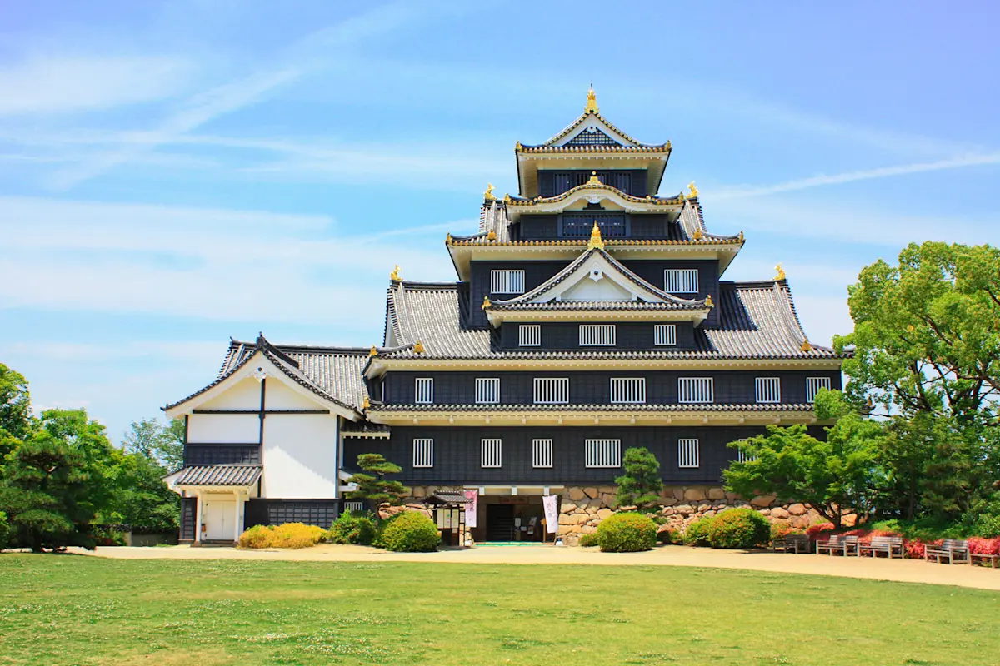

紹介
岡山市の後楽園は、日本三名園の一つとして広く知られています。1687年に岡山藩主・池田綱政によって造営されたこの庭園は、歩むごとに異なる景色を楽しめる回遊式庭園の典型的な例です。池、小川、築山、茶室、広大な芝生などの要素が調和し、春の桜から秋の紅葉まで、四季折々の美しさを見せてくれます。隣接する岡山城と共に、後楽園は歴史と自然が交わる静かで優雅な空間を訪問者に提供します。

四季の風景
後楽園は、一年を通して季節ごとに異なる美しさを見せます。春には桜や梅が咲き誇り、色彩豊かな景色が広がります。夏には緑の芝生と広大な蓮池が涼やかな雰囲気をもたらします。秋には紅葉が鮮やかな赤や黄色に染まり、庭園全体が黄金色に輝きます。冬には雪が静かに降り積もり、静寂で幻想的な雰囲気を醸し出します。四季の移ろいが織りなすこれらの風景こそ、後楽園の最大の魅力です。
春
夏
秋
冬
年間イベント
春季
お花見（3月下旬～4月上旬）：
200本以上の桜が庭園を彩り、多くの花見客で賑わいます。
野点：
咲き誇る花々の中で、日本の伝統的なお茶を楽しむことができます。
夏季
ホタル祭り（6月上旬）：
庭園の小川沿いで何千ものホタルが舞う姿を鑑賞できます。
夜間特別開園（8月）：
庭園が美しくライトアップされ、光と音楽が幻想的な空間を創り出します。
秋季
紅葉祭り（11月）：
園内のモミジやイチョウが色鮮やかに紅葉し、伝統芸能の披露も行われます。
秋の夜間特別開園
再び特別な照明で飾られ、夜の紅葉の美しさを際立たせます。
冬季
新年祭（1月1日～3日）：
地元の人々や観光客が新年を祝いに訪れ、弓道や和太鼓の演奏、祝い酒の振る舞いなどの文化的な催しに参加します。
冬の伝統的な展示：
雪から植物を守るために竹の囲いが設置され、冬ならではの景観が作られます。
これらのイベントは、四季の美しさを称えるだけでなく、訪問者に日本の文化を深く体験させてくれます。
ご利用案内
住所：〒703-8257 岡山県岡山市北区後楽園1-5
開園時間：
| 期間 | 開園 | 閉園 | 入園締切 |
|---|---|---|---|
| 20/3 – 30/9 | 07:30 | 18:00 | 17:45 |
| 1/10 – 19/3 | 08:00 | 17:00 | 16:45 |
| 夜間特別開園 | ~18:00 | ~21:30 | ~21:00 |
※年中無休。イベント（例：「幻想庭園」）開催日は時間が変更される場合があります。
岡山城
後楽園の静かな空間を散策した後、すぐ近くにある歴史的なシンボル、岡山城を訪れて旅を続けることができます。徒歩数分で、かつて江戸時代の権力の中心であったこの地の古い美しさと物語に浸ることができます。
岡山城は、その特徴的な黒い壁から「烏城（うじょう）」とも呼ばれ、岡山市の歴史的な象徴の一つです。16世紀末に建てられ、城の建築は堅固な石垣と日本の伝統的な瓦屋根を組み合わせています。天守閣からは市街と旭川の全景を一望できます。城内には、鎧や武器、地域の歴史的な遺物が多数展示されており、訪問者に魅力的な体験を提供します。